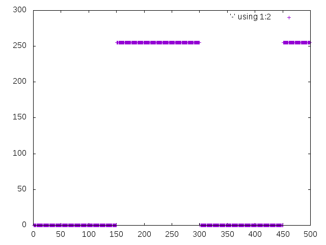
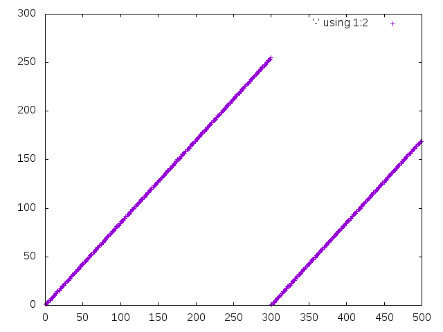
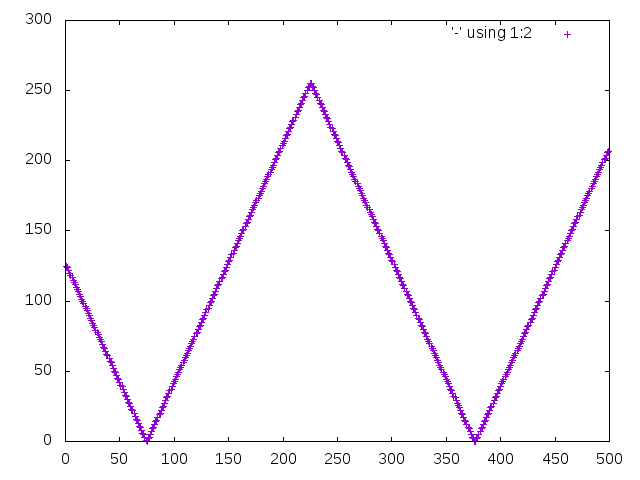
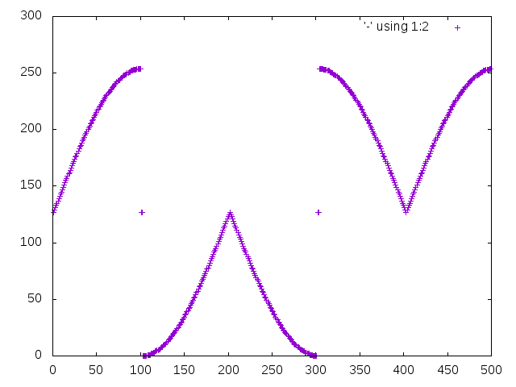
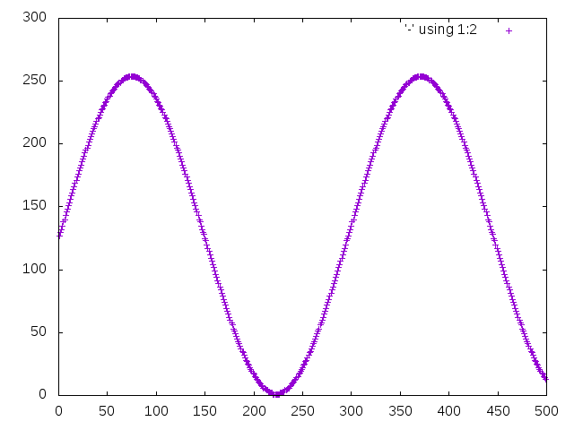

Minimal Audio
Published:
Continuing the Minimal Computing [1] [2] theme this post is about minimal audio programming in C on Linux and OpenBSD.
My first real interest in computers stems from making Drum and Bass as a teenager. I've retained an interest but never tried programming any audio. While exploring OpenBSD I discovered how simply the OS implements audio functionality and (unlike others) gives it kernel-space priority which could give it an edge, in this space, over other OSs.
It seemed like a good place to start learning things from the ground up. Many programmers may have done this kind of thing at university, I hadn't and wish that I had.
The simplest way to make a noise in OpenBSD:
# play white noise
cat > /dev/audio < /dev/random &
# stop
kill %1/dev/random is a file/stream of random bytes, /dev/audio is a file that represents the sound-interface. Cool but generating a musical sound would be better. The simplest way to do this would be to send a stream of bytes to /dev/audio. A "square wave" is basic, a period of bytes at one number/level, followed by another stream at a different level.
I know a little Linux X86 Assembly [3] so the most minimal audio program I could think up was: build a square-wave in assembly. The only problem being that the program was specific to Linux. To work between Linux and OpenBSD (and almost any other OS/architecture) I decided to satisfy another long-standing curiosity. I'd build some wave generators in the C programming-language [4].
I bought two books: The C Programming Language [5] which is a "classic" but also a little dry and based on an old standard (ANSI/c89, as in 1989); and Learn C and Build Your Own Lisp [6], witch is based on C99 (the same as OpenBSD) and is really well written.
For my programs I wanted to build "wave-forms" [7], the basic forms are square, saw, triangle and sine. Generating these and many other types of audio are well covered problems[8], I've seen many great tools [9] that are open-source and worth playing with [10]. (Especially anything by Paul Batchelor[11]).
But as brilliant as those tool are, I wanted to learn for myself and to keep things very simple and easy to debug. I also like that classic 80's game-sound (chip-tunes [12]) so making the waves in 8-bit-mono, using unsigned integers seemed like the way to go.
I setup my tools (Vim, GCC, make and musl lib-c [13]) and it started to flow:
Square:  Saw:  Triangle: 
Then I got hung up on Sine[14] and trigonometry... Having paid little attention in school I was very impressed by Khan Academy[15], an afternoon of "school" and it started to come together.
It still didn't sound quite right but ears (or my ears) are not that good at relating audio irregularities to code. I wanted to visualise what I was hearing. I needed an oscilloscope, the next best thing is GNU Plot[16].
Now it was obvious (and obscene?): 
I had the quadrants of my wave being "rendered" in the wrong order and was looping over the edges of each cycle.
Fixed!!! 
GNUPlot is the shit!
300 +-+----+------+------+------+------+-----+------+------+------+----+-+
+ + + + + + + + + + +
| '-' using 1:2 A |
250 +-+ AAAAAA AAAAAA +-+
| AAA AA AAA AA |
| AA AAA AA AA |
200 +-+ AA AA AA A +-+
| AA AA AA A |
| AA A AA A |
150 +AA A AA AA +-+
|A AA AA AA |
A AA A AA |
| AA A AA |
100 +-+ AA AA A +-+
| AA AA A |
| AA AA A |
50 +-+ AA AA A+-+
| AA AA AA|
+ + + + AAA AAA + + + + AA
0 +-+----+------+------+------+AAAAA-+-----+------+------+------+----+-+
0 50 100 150 200 250 300 350 400 450 500- Minimal Definitions, Minimal Computing - Notes
- Minimal Computing: Thought Pieces
- x86 Assembly With Linux (Exercises)
- Minimal Sound
- The C Programming Language
- Learn C - Build Your Own Lisp
- Waveform
- Rudenoise's Audio Links
- SuperCollider
- Paul Batchelor's Blog
- Sporth
- Chiptune
- musl libc
- sine
- Kahn Academy Trigonometry
- gnuplot